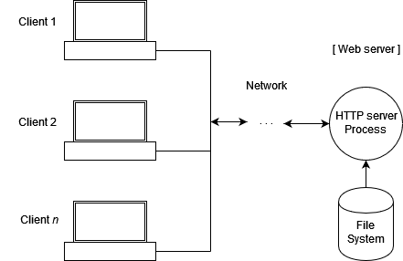

There's one stumbling block that new PyScript users trip on more than any other[1], and it's encapsulated in the following error message you may have seen gracing the top of your page:
We see this when users clone the PyScript GitHub repo, double click on some of the html files in the examples folder... and while some work, others (notoriously simple_clock.html) fail with the error ModuleNotFoundError: No module named ... and the error message above.
Or maybe you've been working on your own PyScript project, and you decide to move your Python code into its own .py file. So you change your PyScript tag to <py-script src="my_code.py"></py-script>, but even with my_code.py in the same folder as your html file, it refuses to load! You might see the same error as above, a CORS error, or both.
So the question we have to answer is, Why can't PyScript find my python files/modules/packages, even though they're in the same folder as my .html file? What is the issue here - why aren't local files available to your PyScript code? What is a "simple web server", and why is it necessary?
The short answer - this isn't PyScript's issue. It's the browser's. And it's not a bug: it's a feature.
For all their faults, modern web browsers do try to keep their users safe. One thing they definitely won't allow? Allowing websites arbitrary access to your harddrive. Imagine if Twitter could search your desktop for spreadsheets and upload them without you knowing. Or worse, you accidentally type in gmial.com and before you know it, any file with "W2" or "Payroll" or "Deposit" in it is whisked away into the hands of dangerous internet thieves.
For that reason, browsers can't access arbitrary files on your harddrive without explicit permission.[2] When you double-click on an .html file? That's giving your browser explicit permission to open that file and only that file. Same goes for using File > Open... in the browser's menu.
But when adding external files in your PyScript page (using src = ... or <py-config> [[fetch]] </py-config>), PyScript uses the browser's built in Fetch API to make a request to load that file from the hard disk. And as far as your browser is concerned, you haven't given explicitly permission for that page to open that file, so it forbids access.
The large red error that appears at the top of the screen in this case tries highilght to the new Pyscript user what's happening here and how to fix it. (I should know, I wrote it). The key advice it provides? "You must use a webserver to serve the additional files." But what is a webserver, and why might we use one?
In the broadest terms, a Web Server is software (possibly embedded in some related hardware) that responds to requests from a computer network; if we're being slightly more specific, we might say it responds to HTTP or HTTPS requests, to distinguish it from, say, a print server which spools jobs to a physical printer or a mail server that's responsible for email. A Web Server responds to requests for resources on a network, for things that look 'web content.'
Credit: Wikimedia
How exactly that software selects how to respond can vary from very simple to exceedingly complex. A very simple piece of server software might provide access to a single folder on a hard drive, with a one-to-one mapping from URLs to the files in that folder. E.g. If such a server gets a network request for "/earth.jpeg", it responds with the contents on the hard disk of the file earth.jpeg if there is one (and an error if it doesn't exist). At the other end of the spectrum, a piece of server software might be seriously complex, and responding to requests might involve reading from a database, doing just-in-time calculations to adjust the response, etc.
Mostly for our purposes, what we want is the former: a simple server that makes files available to "the network." This allows the machinery behind a <py-script> tag's src attribute and the [[fetch]] configurations to load resources on the network that have the contents of our files on disk.
A common retort from new Web Developers is: "So the browser doesn't let me open my own files?? Rediculous!" Know that a lot of thought and consideration goes into the standards around what browsers should and should not allow for security purposes. Given what we all know about the internet, defaulting to not trusting an arbitrary resource is often the right call.
Thankfully, if you have Python installed on your system, you already have simple server software available to you. You can start it in three simple steps:
python -m http.server 8080 --bind 127.0.0.1Now, in your favorite web browser, navigate to http://127.0.0.1:8080/name-of-a-file to view any file in that folder in your browser.
What's more, the the files in that folder are now available on your local network - "local", in this case, meaning "internal to your computers operating system." These files are not available to other computers on your personal network, your work network, nor the internet: they're available as web resources within your own computer only. Still, that's enough for the browser to be able to access them, and for your PyScript applications to pick them up.
There are other ways of starting/running a local Web Server for development purposes as well. Many IDE's, like Pycharm and VS Code have the ability to launch a simple server for you, or added extensions to do so. What you choose to use is down to your personal development preferences and ease of working.
The MDN Web Docs have a great article on Starting a Local Testing Server, which features some additional techniques for other languages.
PyScript aims to minimize the challenges Python users face when moving to the web. But there are a few sticking points where, for very sound Browser Safety reasons, we cannot provide a totally seemless transition between the two realms. Thankfully, a simple server solves the problem. Run one from the command line and you'll be just fine.
One use case we've seen for PyScript is users who would like to develop a "web app" using PyScript, but then have their users (usually fellow employees) access it by opening their HTML file on a shared network drive. This access method, which works when the file in questsion contains all of the Python code/resources internal to it, breaks when you need external files for exactly the reasons outlined above. Is there anything to be done?
There's no perfect answer here, only options. The best is to work with your internal IT team to have your project hosted as a network resource on the internal (or public) network, but depending on your situation, that may not be reasonable. If the only external resource is Python code, you can move it all within <py-script> tags in your HTML file. If you have a consistent development environment for your colleagues, you could put a shell script or batch file in the same folder as your project which automatically starts a server for your users.
[1] I have only my own annecdotal experience to support the claim that this is the most common error. However, it came up multiple times at PyConUS, on Reddit, and on Stack overflow in the same week, so I feel fairly justified in that claim.
[2] The statement that browsers can't access files on your hard drive, while true in spirit, has, like anything to do with programming, lots of exceptions. For example, in some operating systems, including a <img src="..."> tag in your html file with a local image source; if you open the html file in a browser, the image loads just fine. Such is the dance of features that vary based on operating system and browser. I hope the reader will forgive me painting with a broad and mostly-true brush.
{kind=link}